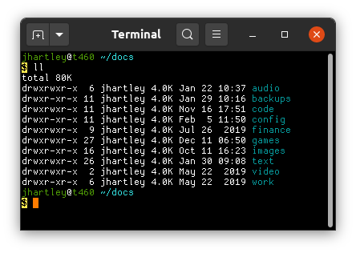

Dina font as an OTF.
The Dina font, converted to an OpenType Font (see screenshots at the bottom of the page):
📦 Dina-v2.93-otf.tar.gz
Pango dropped support for naive bitmap fonts in v1.44 -- i.e. from Ubuntu 20.04, Focal, onwards.
So all bitmap fonts need to be converted into a format that will render, ie. a vector format such as OpenType that allows bitmaps to be embedded. (Not a conversion of the bitmap into an outline, losing the advantages of the crisp, tiny bitmaps.)
For most bitmap fonts, this conversion will be done for you, by packagers or font authors.
But you'll need to do it yourself for any peripheral fonts that you love more than your distribution does. Here's how I did it for my beloved Dina.
1. Identify the font file.
fc-list | grep Dina
2. Convert.
Use either command line tools, or fontforge.
2.1 Using fontforge
A GUI tool.
-
Open up fontforge, paste the font path in.
-
File / generate fonts.
-
Select:
-
Left dropdown: "OpenType (CFF)"
- Right dropdown: "In TTF/OTF"
- Generate
The results have some problems. I'm using it in gnome-terminal:
- People converting other fonts report issues with ugly gaps between characters. But I don't see that, perhaps because it's a monospace font?
- The converted font is invisible in font selection dialogs, making it look like the process did not work. But once selected, by clicking around blindly, then the font displays fine in applications.
- Using a font size which is not defined in the font displays a blank terminal, instead of falling back to some other font.
- Using ctrl-+/- to select font sizes cycles through three of the four defined sizes. I don't know why it skips one. But all four are usable if you explicitly select a size.
2.2 Using command-line tools
The process is described at https://fedoraproject.org/wiki/BitmapFontConversion.
Ubuntu's released version of fonttosfnt (1.0.4) produces unusable results: * Only the 1st and 2nd smallest font sizes are preserved. * In the 2nd smallest size, all variations are too bold, so that 'bold' variations look 'double-bold'. (Italics looks really ugly too, this may just be a result of the enboldening.)
TODO: Consider trying the latest fonttosfnt (1.1.0) https://gitlab.freedesktop.org/xorg/app/fonttosfnt or at least filing an issue there to try and get some help.
3. Install
- Copy to
~/.local/share/fonts(or~/.fonts, right?) fc-cache -f
The result
I know, it doesn't look like much.

But compare it with a regular vector font. Here's Ubuntu Mono, the best of the vector fonts I could find at these sizes. Blurry and inconsistent and hard to read: